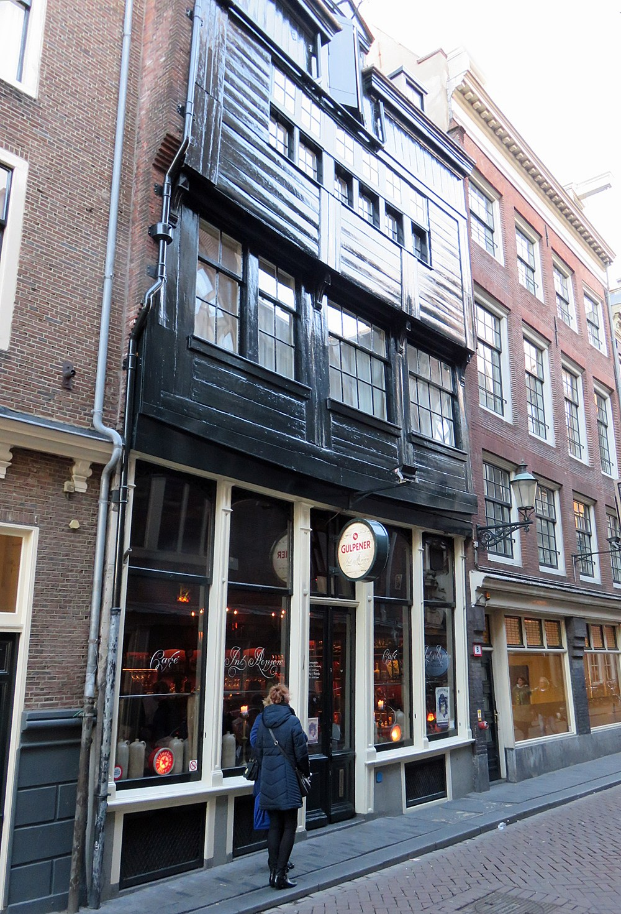

01 · Zeedijk
In ’t Aepjen
The house at Zeedijk 1 is genuinely old: Hendrick de Keyser’s research dates the timber building to about 1545–1550. What it is not, on the City of Amsterdam’s own 2025 account, is an ancient inn. City historian Maarten Hell, writing for Ons Amsterdam and summarised on amsterdam.nl (19 February 2025), says there was never a tavern in this wooden-fronted house, and that the café was established only in 1991. The sailors-paying-debts-with-monkeys story, and the saying “in de aap gelogeerd,” is legend. Dates such as “since 1519” that appear on some travel sites are not supported by that research.
Tip: Two minutes from Amsterdam Centraal, at the start of the Zeedijk. Come for the listed wooden house and a classic brown-café room — not because this address has been pouring beer since the 16th century.
Directions: Google Maps · Apple Maps
Photo: Paul2, CC BY-SA 4.0, via Wikimedia Commons
Sources: Hendrick de Keyser: Het Aepgen · Gemeente Amsterdam, 19 February 2025: De oudste kroeg
See In ’t Aepjen on our Unique Pubs deck →
Find a stay near In ’t Aepjen →